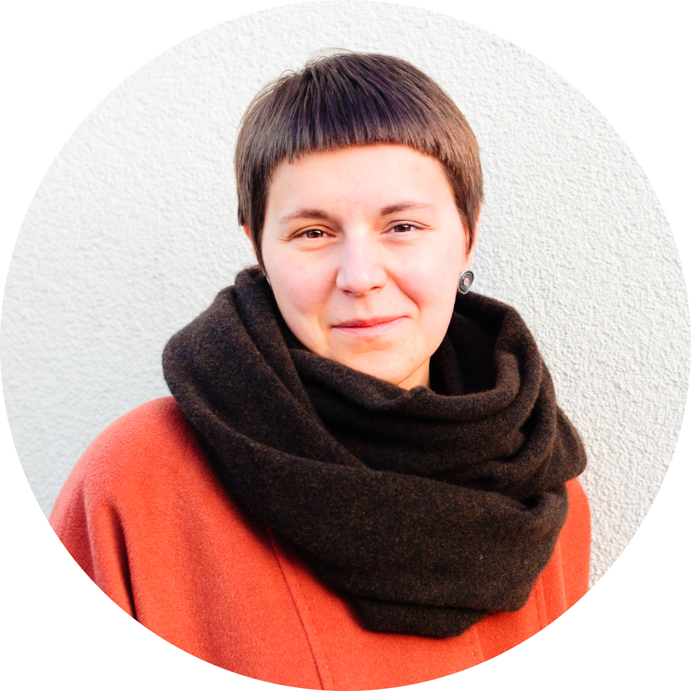
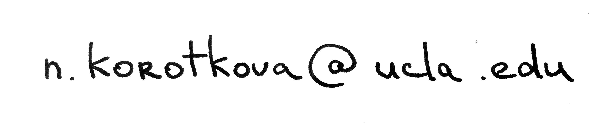
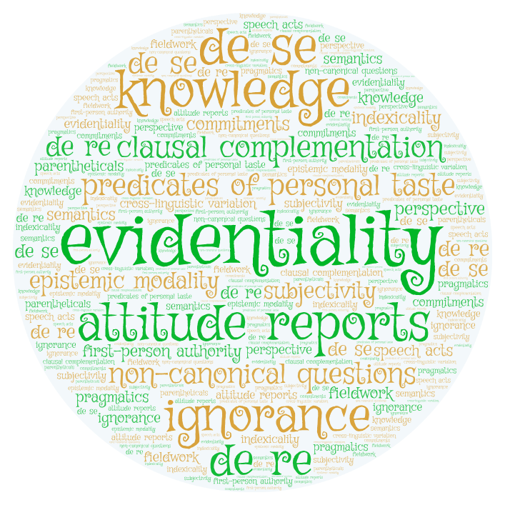

name
The legal variant of "Natasha" is "Natalia". The former is my name, and the latter is reserved for paperwork.
|
contact

University College Utrecht
Campusplein 1
3584 ED Utrecht
The Netherlands

|
about
My work is bridging formal semantics, formal pragmatics and philosophy of language, with a stong focus on cross-linguistic research in those areas. I am an assistant professor at the University of Utrecht, where I am affiliated with the Institute for Language Sciences and teach at the University College, a liberal arts college within the university. Before coming to Utrecht, I was a postdoctoral researcher at the Linguistics Department at the University of Konstanz, where I first came in 2018. Before that, I was a researcher at the University of Tübingen. And before that, I got my PhD in Lingustics at UCLA.
My pronouns are she/her. I am a vegetarian and I've been commuting by bike since 2010, including in Los Angeles.
My research program is on epistemic commitments and first-person content, as well as everything in between. The specific topics I have worked on include evidentiality, modality, subjective language, attitudes, clausal complementation, parentheticals, speech acts, and non-canonical questions. My research program is described in greater detail here, and most current projects revolve around one of the following issues: (i) the universals and variation in the evidential domain, (ii) the semantics and metasemantics of taste, and (iii) non-canonical interrogatives across Slavic. The full CV is here.
recent and upcoming
May 2023. TBA. Invited talk at the Discourse and Philosophy Colloquium, ILLC, University of Amsterdam.
February 2023. "Conversational dynamics of razve-questions in Russian", paper coming out in the Proceedings of Sinn und Bedeutung 27. [paper]
February 2023. "Vanilla rules: The 'no ice cream' construction in English", paper coming out in the Proceedings of Sinn und Bedeutung 27. (w/ Felix Frühauf, Hadil Karawani, Todor Koev, Doris Penka and Daniel Skibra) [paper]
October 2022. "Acquaintance content and judgment types". Talk at the workshop "The Acquaintance Inference: Linguistic and Philosophical Perspectives", University of Konstanz. (w/ Pranav Anand)
October 2022. Organizing the workshop "The Acquaintance Inference: Linguistic and Philosophical Perspectives", University of Konstanz (w/ Jochen Briesen).
October 2022. "Hearsay and (non-)commitment". Invited talk at the New York Philosophy of Language Workshop, New York City.
September 2022. "Conversational dynamics of razve-questions in Russian". Poster presentation at Sinn und Bedeutung 27, Charles University, Prague. [poster]
September 2022. "Vanilla rules: The `no ice cream' construction in English". Talk at Sinn und Bedeutung 27, Charles University, Prague. (w/ Felix Frühauf, Hadil Karawani, Todor Koev, Doris Penka and Daniel Skibra)
June 2022. "Refining find". Invited talk at the workshop Subjectivity in semantic interpretation at NASSLLI, University of Southern California. (w/ Pranav Anand)
June 2022. "Futurity, evidentiality and modality: Cross-disciplinary perspectives". Class at NASSLLI, University of Southern California. (w/ Fabrizio Cariani)
May 2022. "Impersonal rules: The case of general prohibitives". Talk at the 46th Generative Grammar in the South (GGS), University of Stuttagart. (w/ Felix Frühauf, Hadil Karawani, Todor Koev, Doris Penka and Daniel Skibra)
May 2022. "Hearsay and (non-)commitment". Invited talk at the Meaning in Language Colloquium, University of Düsseldorf.
February 2022. "Hearsay and (non-)commitment". Talk at the workshop Commitments in Grammar and Discourse at the 44th Meeting of the German Linguistics Society (DGfS), University of Tübingen.